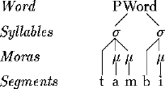
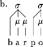
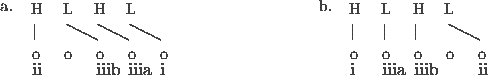
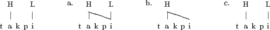
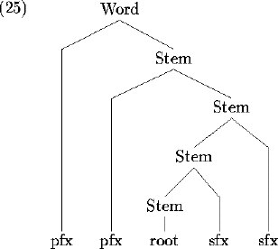

obstruent  nasal
nasal  liquid
liquid  glide
glide  vowel
vowel
Copyright © 2000 H. Andrew Black and SIL International.
All rights reserved.
Note: This is a slightly revised version of the author's paper "TonePars: A Computational Tool for Exploring Autosegmental Tonology" published in the SIL International's electronic publications series (see the URL http://www.sil.org/silewp/1997/007/). The earlier paper focused on the parsing issues, while this one is on the generation issues.
The ToneGen program incorporates the STAMP morphological generation program to allow for modeling an autosegmental approach to tone. This paper describes both the linguistic and implementation issues involved.
Whereas the TonePars program augments the morphological parsing program AMPLE (Weber, Black & McConnel 1988) to allow for modeling an autosegmental approach to tone, so ToneGen aguments the morphological generation program STAMP (Weber, McConnel, Black & Buseman 1990). While STAMP is able to do a fine job when synthesizing for an orthography that only represents lexical or underlying tone, it can run into great challenges when attempting to represent surface tone. This is especially so for languages with complex tone systems. The ToneGen program has been developed to help deal with this situation. ToneGen models an autosegmental approach to tone. The current implementation was written in C and has been applied successfully to a corpus of over 2,000 words in Tlapanec (see Weathers & Carrasco 1988) and to Peñoles Mixtec (see Daly 1993).
The ToneGen program actually includes the STAMP generation (also called synthesis) code. That is, it does everything that STAMP synthesis does with the addition of also applying a set of autosegmental tone rules to the result. These rules then mark the synthesized word with its (hopefully) correct tones.
The ToneGen program reads the AMPLE analysis output file, augmented STAMP dictionary files, and a special, tone-oriented control file (which is a superset of the STAMP declarations file). For each analysis posited by the output of AMPLE, it synthesizes the analysis (just like STAMP would) and builds a model of the phonological word (segments, moras, syllables, and tone tiers). It posits the underlying tones based on the appropriate dictionary entries and applies the user-defined tone rules to the tones. After all the rules have applied, it creates a tone-marked form (e.g. it might be ndàá). This tone-marked form is then passed on to STAMP's "TextOut" module which applies any orthographic changes, takes care of dealing with capitalization, and puts the word back into its textual framework (i.e. it places the word back in the text including any punctuation, whitespace, or format markers).
The paper is organized as follows. The first section sketches the key phonological concepts modeled by ToneGen. The next section delineates the implementation details, describing and illustrating how ToneGen proceeds. The final section discusses how effective ToneGen has been. There is also an appendix containing an annotated listing of all of the field codes ToneGen has available in its control file.
This section contains a brief introduction to the key concepts that ToneGen models. A much more thorough explanation can be found in Kenstowicz (1994), especially chapters 6 and 7.
We begin by considering how one might model a tone linguistically. Are tones segmental features like voicing or labial or sonorancy? If so, why do they rarely ever show up on consonants and then only when the consonant is a syllabic nasal (or other syllabic sonorant)? Tones, therefore, are not features of the segment, but are rather autosegments (i.e. "self-segments") that live on a distinct tier from the rest of the segments (Goldsmith 1976). These autosegments do not attach to segments, but rather to what are called Tone Bearing Units (TBUs). A TBU may be considered to be a vowel or a syllable or a sub-constituent of the syllable called a mora. That is, the tone attaches to a TBU which is a constituent of the phonological word.
A basic picture of a phonological word is shown in (1).
|
 |
A phonological word consists of a sequence of syllables. Every syllable (indicated by s) has at least one mora (indicated by m). A mora is a unit of syllable weight; light syllables have one mora while heavy syllables have two (see Hayes 1989 for one account of moraic theory). Some languages make distinctions between heavy and light syllables for stress and reduplication.
How are syllables constructed? A view that has been around for long time is the Sonority Sequencing Principle: A syllable has a segment with a sonority peak that is preceded and/or followed by segments of decreasing sonority (see Kenstowicz 1994:254-255 for a discussion). Phonologists agree on the relative sonority scale given in (2), where obstruents are the least sonorous and vowels are the most sonorous.
|
obstruent |
In order to properly determine syllables, several pieces of additional information may be needed. This includes such things as whether codas are allowed or not; if syllables are monomoraic or not; how a VCCV sequence is to be split; etc.
For example, given that codas are allowed and that syllables may be bimoraic, the forms in (3) will be syllabified as shown.
|
|
|
|
|
 |
|
|
|
In (3a), the sonority hierarchy determines that the syllable boundary is between the a and the p. It follows the assumed universal that in a VCV sequence, the C will become an onset and not a coda. In (3b), there is a sequence of two consonants word medially. Since the sonority is decreasing between them, the syllables are split between the two consonants. Note that this, too, assumes that a pre-vocalic consonant will be an onset.
Example (3c) also has the same two consonants but in the reverse order. In this case, the sonority is increasing going from the p to the r. Now there are two possibilities allowed by the Sonority Sequencing Principle. In (3ci), the p is incorporated into the onset while in (3cii), it is treated as a coda of the preceding syllable. Clearly sonority alone is not enough to determine which of these two options to use. As I understand it, a particular language will consistently choose one option or the other.
As mentioned above, the syllables and moras and segments are on one plane while the tones are on an independent one. That is, tones reside on a tone tier. This view, originally argued for by Goldsmith (1976), makes quite good sense because tones really do seem to act independently of segments.
There is more than one view of what the tone tier looks like. The simplest picture of a tone tier is as follows. In the diagrams, the o's represent TBUs; H and L represent a high and a low tone, respectively. The lines show how the tones are associated to the TBUs.
|
|
This would be a H H L H L L tone pattern. One can view tone spreading very nicely this way:
|
|
That is, the one linked H tone spreads onto the following two TBUs that do not have any tone associated with them. Notice that by associating these tones to TBUs rather than to segments (such as vowels), the spreading is all very local: there is no need to worry about whether the next segment is a consonant or a vowel, for example.
Another view of what the tone tier is like has been articulated by some theorists such as in Snider (1988, 1990). They find it advantageous to posit internal structure for tone. Rather than just being a single unit (such as H or L), a tone consists of several parts. These parts can act somewhat independently of each other. The two most important are two distinct tiers of tone: a primary and a register tier. The primary tier provides the basic pitch of the tone and the register tier provides a modification of that pitch.
All of this means that the following kinds of tone diagrams can be represented:
|
|
The e of te has a primary low only. The aô in daôtnùní has a register h, primary L combination as well as a primary H tone. The ù of daôtnùní has a register h, primary L combination. The final í of daôtnùní has just a primary H tone. Finally, the ni` has a floating register h. Floating tones are ones that are a part of the representation of a particular morpheme, but are not associated with or linked to any of the TBUs of that morpheme. They float to the side of the morpheme and may become associated or linked to a surrounding morpheme.
Underspecification of one tone may also prove to be beneficial. In Peñoles Mixtec, for example, the low tones almost never need to be explicitly entered. They can fall out by default.
Having introduced the key phonological concepts modeled by ToneGen, we now address how they actually work within the tool. We first address syllabification, then the augmented STAMP lexical entries, followed by the tone rules, and end with a discussion of the orthographic output.
In order to properly determine syllables, several pieces of information are needed.
First, ToneGen must know what the segments are. ToneGen works on the internal orthographic representation of the segments (that is, the representation of the syntehsized word that results from STAMP's synthesis process). The \segment field in the control file provides the name of a file that contains a full definition of each such segment. The conventional file extension for this file is .seg. Example (7) shows two entries from the Peñoles Mixtec file; the first is for a vowel, the second for a consonant.
\s a \mb \son + \cons - \toneseg H = á \toneseg h = à \toneseg L h = à \toneseg h H = aô \toneseg L h H = aô \s p \son - \cont - |
The \s record marker field contains the segment symbol itself.
The \mb field indicates that the segment is mora bearing (i.e. has a mora). Under the moraic theory, long vowels can be viewed as a single segment with two moras. Such long vowels are indicated by using \mb 2 to tell ToneGen that such a segment has two moras.
The \son, \cons, and \cont fields are to define the sonority, consonantal and continuant features for these segments. (By default, \cons is + and \cont is +). These three features are used to determine the relative sonority of the segments by the syllable building routine. The ranking in increasing sonority is:
|
-cont |
The user is expected to label each segment with its appropriate features in order to get the correct sonority ranking.
The \toneseg fields give the mapping between the tones linked to a TBU and their internal orthographic representations. See Section 3.4 below for discussion and exemplification.
Given the segment definitions, ToneGen is able to parse the input word form into its respective segments. It assumes that the longest segment that matches is correct. Note that this could be erroneous in certain ambiguous cases. For example, consider an orthography that includes the four segments t, tl, l, and ll. A sequence of tll will always be interpreted by ToneGen as tl followed by l and never as t followed by ll. If the latter is correct, ToneGen will be in error.1
Having parsed the word into its segments, ToneGen can use the sonority feature information of the segments to begin syllabifying the word. As noted above, more information than sonority alone may be needed. ToneGen uses several field codes in the control file to provide such information, as described in the following paragraphs.
Some languages allow codas (consonants at the end of a syllable) and some do not. If the language under study does not, the \nocodas field should be included in the control file.
Some languages never have more than one segment in a syllable nucleus (that segment is usually a vowel although it could also be a syllabic sonorant). That is, in such languages every syllable is monomoraic. The field \monomoraic can be used to tell ToneGen to limit syllables to containing only one mora.
As discussed above, a sequence of VCCV (vowel consonant consonant vowel) can be ambiguous as to how it should be syllabified. If the first C is less sonorous than the second C and syllables can have codas, it is not clear whether the first C should be a coda of the first syllable or whether it should be the first member of a complex onset of the second syllable. The \v.ccv and \vc.cv fields can be used to tell ToneGen which approach to use. If the first C should be an onset, then use the \v.ccv field. If the first C should be a coda, use the \vc.cv field.
Hayes (1989) proposes that codas can become mora-bearers under a process called "Weight by Position". The \wtbypos field allows this to happen.
In addition, ToneGen has a debug option whereby it shows the results of syllabification. It assumes that the syllable symbol will be a dollar sign ($), the mora symbol will be a lower case m, and that syllable boundaries are to be indicated by a period. The user can tell ToneGen to use other symbols via the \sylstr, \morastr, and \sylsep fields. The string that appears after these fields will be used for the syllable symbol, the mora symbol, and the syllable separation character, respectively.
Once ToneGen has determined the syllable structure, it can assign tone bearing units (TBUs) to the prosodic structure. Only moras are treated as TBUs by the current version. Later versions will allow the user to specify (via a field in the control file) whether TBUs should be assigned to moras, vowels, or syllables.
After assigning the appropriate TBUs, the next step is to determine how to assign the underlying tones to their appropriate TBUs. In order to do this, ToneGen must first determine which sequences of segments correspond to which morphemes. It deduces this by parsing the decomposition field (\d) from the analysis file in conjunction with the analysis field (\a). This segment-to-morpheme correspondence tells ToneGen where a morpheme begins and ends segmentally. By referring to the syllable structure built upon these segments, it can determine what TBUs (if any) are contained by the morpheme.
ToneGen uses the morphname from the analysis field to lookup the dictionary entry for each morpheme. The tone information is keyed via a separate field in the STAMP dictionary file. Consider the entries listed in (9).
|
a. |
\r chöö \a chöö \c N \g hilltop \u chöö |
|
|
|
b. |
\r àdi \a adi \c Prt | CNJ \g or \u àdi \mp h_association_exception | conjunctions are exceptions \tone linked h @ tbu 1 |
|
|
c. |
\r agòstó \a akosto \c N \g August \u akòstó \tone linked h @ tbu 2 \tone linked H @ tbu 3 |
|
|
d. |
\r chíléhé \a chilehe \c N \g armpit \u chíléhé \tone linked H @ tbu 1 2 3 |
|
|
e. |
\r chindee` \a chindee \c V \g help \u chindee` \tone right-floating h @ tbu 3 |
|
|
f. |
\r daôtnùní \a datnuni \c Adv \g then \u daôtnùní \tone linked h @ tbu 1 | this is two morphemes; hence \tone linked H @ tbu 1 | the tones are not shared \tone linked h @ tbu 2 \tone linked H @ tbu 3 |
|
|
g. |
\r espíritú` \a espiritu \c N \g Holy.Spirit | must be followed by Yaô Ndioôxí \u espíritú` \mp h_association_exception \tone linked H @ tbu 2 \tone linked H @ tbu 4 \tone right-floating h |
These are normal STAMP root dictionary records, where \r is the record marker, \a is the allomorph entry, \c is the category, \mp is morpheme property and \g is the (English) gloss. The \u is for the underlying or base form of the word (including tone information). While this information is not used by either STAMP or ToneGen, it can be useful in producing interlinear text showing the underlying form (via AMPLE and other tools). Notice that the morpheme properties can be used to control the action of the tone parser.
The new field is \tone. This field, of course, is for the lexical tone information. There is one \tone field for each type of tone. The syntax for this field is given in (10) (parentheses indicate optional elements).
The possible values for <type> are listed in (11).
|
linked |
the tone is linked underlyingly |
|
|
|
left-floating |
the tone is floating to the left of the morpheme |
|
|
right-floating |
the tone is floating to the right of the morpheme |
|
|
boundary |
the tone is associated to the edges of a morphological domain |
|
|
floating |
the tone is floating without specifying where it is relative to the morpheme |
|
|
delinked |
the tone has been delinked |
Only the first four would normally be found in lexical entries.
The tone values (<value>) are under user control. These values also tell ToneGen whether to use both primary and register tiers or just a primary tier. The user specifies the values via fields in the control file. The \tonevalue field gives the primary tone values and the \tone_reg_value field gives the register tone values. If there is no \tone_reg_value field, then ToneGen assumes that there is only a primary tier. For the example data above, there are the four listed in (12) which are to be interpreted as in (13).
|
\tonevalue H \tonevalue L \tone_reg_value h \tone_reg_value l |
|
H |
primary high |
|
|
|
L |
primary low |
|
|
h |
register high |
|
|
l |
register low |
The type and value of the tone field tell ToneGen the underlying status of the tone (linked, left-floating, etc.) and the value (primary high, register h, etc.), but not to which TBU in the morpheme the tone belongs. By default, the first TBU will be assumed for a linked tone. A right-floating tone is aligned with the last TBU in the morpheme by default. A left-floating tone is aligned with the initial TBU in the morpheme by default.
One can specify which TBU a tone should be aligned with by using the marker symbol (an @ sign), the key word tbu and a number as in the examples above.2
The relative order of the \tone fields can be crucial. If an entry has a TBU with two distinct tones, then the first indicated tone will be aligned first, followed by the second tone.
Once the underlying tones are assigned to their respective TBUs, ToneGen applies the ordered tone rules. Such rules associate, spread, delink, delete, or insert tones. They can be cyclic or non-cyclic.
The user writes the rules via a \tone_rule field in the control file. Each rule begins with a name and is followed by one or more commands. Thus, one can bundle several commands under one name. A rule may also be optionally conditioned to apply only when the specified conditions are met. The rules are applied in the order specified in the control file.
The tone rules in ToneGen are conceptually modeled after Archangeli & Pulleyblank (1993) and Hyman (1990) (which is based on early work of Archangeli and Pulleyblank) and are based on discussions in Pulleyblank (1986) and Kenstowicz (1994). In order for the tool to be as general as possible, the rules have been highly parameterized. The following sections delineate these parameters and briefly illustrate them.3
Every command begins with an operation that is to be performed on some tone. The possible operations are listed in (14).
|
Associate |
Associate the indicated tone: this means to insert the tone into the tone tier and to link that tone to its appropriate TBU. |
|
|
|
Delete |
Delete the indicated tone. The tone is removed from the tone tier and all of its association lines (i.e. links) are also erased. |
|
|
Delink |
Delink the indicated tone: i.e. erase all of its association lines. The tone is not removed from the tone tier. |
|
|
Insert |
Insert the indicated tone into the tone tier. No association lines are drawn. |
|
|
Link |
Link the indicated tone to its appropriate TBU. The tone is assumed to already be in the tone tier. Linking inserts an association line (or lines). |
|
|
Spread |
Spread the indicated tone by drawing in the appropriate association lines (i.e. make the appropriate links). The direction, iteration, etc. of the spreading operation depends on the setting of the appropriate rule operation parameters (see section 3.3.2). Spreading assumes that the indicated tone is linked. |
|
|
Copy |
Copy a tone or tone pattern (as in reduplication). This has not been implemented yet. |
Some examples are given in (15).
\tone_rule clitic_register_h_TR Associate a h tone. |
|
|
|
\tone_rule verbal_H_delinking_TR Delink a current linked H tone, Delete a current right-floating h tone. |
|
|
\tone_rule L_clitic_h_association_TR Delete a left floating h tone, Insert a right-floating h tone. |
|
|
\tone_rule h_association_TR Link a left floating h tone. |
|
|
\tone_rule H_spread_TR Associate a H tone, Spread a linked H tone. |
Each of these assumes the default settings for the various operation parameters.
The operations are further qualified via direction, iteration, mode and OCP (Obligatory Contour Principle) settings.
Direction is either towards the left (right-to-left) or towards the right (left-to-right). The direction parameter is especially appropriate for the spreading operation. The user may specify the direction using any of the values listed in (16).
|
left-to-right |
The operation applies towards the right. |
|
|
|
leftward |
The operation applies towards the left. |
|
|
right-to-left |
The operation applies towards the left. |
|
|
rightward |
The operation applies towards the right. |
Iteration deals with how many times and in what fashion the operation is to be applied.4 The possibilities are delineated in (17).
|
noniteratively |
The action is to apply non-iteratively; i.e. it applies once and only once. |
||
|
|
iteratively |
The action is to apply iteratively; i.e. it applies to as many TBUs as possible. For example, if the action is to spread a H tone to the right non-cyclically, then the action attempts to spread the H tone to all the TBUs in the word to the right. If such an action were cyclic within morphemes, then the spreading would be to all TBUs within the morpheme. |
|
|
|
edge-in |
The action is to apply the tones in an edge-in fashion. See Yip (1988) and Hewitt & Prince (1989). Example (18) illustrates the two possibilities. If the direction is to the left, then (i) associate the rightmost tone to the right edge of the domain; (ii) associate the leftmost tone to the left edge of the domain (if possible); and (iii) associate all remaining unassociated tones right-to-left beginning to the immediate left of the first tone (18a). If the direction is to the right, then (i) associate the leftmost tone to the left edge of the domain; (ii) associate the rightmost tone to the right edge of the domain (if possible); and (iii) associate all remaining unassociated tones left-to-right beginning to the immediate right of the first tone (18b). This has not been implemented yet.5 |
|
|
|
one-to-one |
There is a one-to-one matching between tones in the list of tones and TBUs. This has not been implemented yet. |
|
|
 |
Mode deals with various ways of associating the tone to a TBU.6 The possible values are listed in (19) and are illustrated in (20). Each of the forms in (20a-c) should be considered as beginning with the initial form in (20).
|
feature-adding |
Feature-adding mode causes the tone of the action to be appended to the TBU. That is, if there is already a tone linked to the TBU, the new tone will also be linked to it (20a). |
|
|
|
feature-changing |
Feature-changing mode causes any existing tones on the indicated TBU to be replaced by the new tone (20b). |
|
|
feature-filling |
Feature-filling mode causes the new tone to not be linked if there are existing tones already on the TBU (20c). |
|
 |
The OCP or Obligatory Contour Principle, originally due to Leben (1973), basically bans adjacent identical tones from a representation. The validity and precise definition of the OCP has been debated (see McCarthy (1986) and Goldsmith (1990) for some discussions). The OCP is also not overtly represented in the graphic form of autosegmental rules. The handling of the OCP within ToneGen has not been totally implemented yet. The possible values are listed in (21).
|
optional OCP-blockage |
An OCP violation will optionally block the action from applying. |
|
|
|
OCP-blockage |
An OCP violation will block the action from applying. |
|
|
OCP-ignored |
The OCP is ignored (does not apply at all). (This is the effect currently.) |
|
|
OCP-merger |
When the application of an action will result in an OCP violation, merge the two offending tones into one. |
The default settings for these operation parameters are as indicated in (22).
|
direction |
rightward (left-to-right) |
|
|
|
iteration |
non-iteratively |
|
|
mode |
feature-filling |
|
|
OCP |
OCP-ignored |
The user can override the defaults in two ways. The global default can be altered by including a \default field in the control file containing the name of the operation, a colon, and the new default in the control file. Alternatively, the user can explicitly state any of the operations in the rule itself. See the examples in (23).
\tone_rule clitic_register_h_TR Associate a h tone rightward non-iteratively. |
|
|
|
\tone_rule verbal_H_delinking_TR Delink a current linked H tone non-iteratively, Delete a current right-floating h tone. |
|
|
\tone_rule H_spread_TR Associate a H tone, Spread a linked H tone rightward iteratively using feature-filling mode with OCP-merger. |
Rules can apply pre-cyclically, cyclically or post-cyclically (pre-cyclic is potentially the case of the Universal Association Convention of Goldsmith 1976 and Pulleyblank 1986). Strict left-to-right or right-to-left cyclicity currently can be handled.
Rule application is controlled via a \default field in the control file or as an default override on a rule. The possible values for the \default CYCLE: field are listed in (24) with comments explaining their meaning.
|
none |
Indicates that there are no cyclic rules. |
|
|
|
domain |
Indicates that all "lexical" rules should be applied within the domain(s) specified by each rule. If the rules do not specify any domains, apply the rules from the innermost morphological domain node outward (presumably this will be root-out). This has not been implemented yet. |
|
left-to-right |
Apply "lexical" rules in the specified direction across the morphemes; ignore any morphological domain structure. |
The domain notion is with respect to morphological domains. The idea is that the user will specify phrase structure rules to indicate the domain or morphological structure of a word. Tone rules in turn may refer to these domains.
For example, a language which builds suffixes first, then prefixes could end up with the following domain structure:

C. Black (1995) (building on work of Barrett-Keach 1986, Myers 1987, and Mutaka 1990) has argued for the following word structure for (at least some) Bantu verbs:

Many of the complex verb tone patterns in Kinande can be captured quite nicely by making use of the Infl, MacroStem and Stem domains.
We can also use these domains to model the phonological cycle of Lexical Phonology where needed. The cyclic tone rules are bracketed by \begcycle and \endcycle. Each rule delimits which morphological domains it applies to (think of these as modeling levels or strata). We do not have any way to restrict a rule to apply to only contiguous domains (the Continuous Domain Hypothesis of Mohanan 1986). This is because at load time we will not know whether particular domains are contiguous or not. We can, however, follow the spirit of the Continuous Domain Hypothesis and say that once a rule is turned off, it can never be turned on again. This is much like the Strong Domain Hypothesis of Kiparsky (1985) (that says that every rule is turned on at the beginning of the derivation and rules may only be turned off), except that we do not require all rules to be "on" initially.
What do we do when a domain is nested (such as Stem in the examples above)? Cyclic rules will be applied within a domain by finding the innermost morpheme of the domain and then successively moving upwards through the domain (I assume that in such a case all domains will have binary branching.)
In contrast, boundary tone rules will apply to the highest level of a domain. (Boundary tones are tones which are associated to an outermost edge of a domain.)
In some languages, a tone from one word can spread or link to an immediately neighboring word. For example, a final high tone may spread onto a following word.
In order to model this, ToneGen has two special types of tone rules called edge rules. An edge rule carries over a condition from a preceding or following word. This is an attempt to allow tone rules to apply across word boundaries.
Edge rules follow the same syntax as tone rules; they just use a different field code. The codes and their interpretation are listed in (27).
|
edge_rule |
Apply the rule from the left (i.e. carry over any tonal conditions from the previous word). |
|
|
|
right_edge_rule |
Apply the rule from the right (i.e. carry over any tonal conditions from the following word). |
Since ToneGen processes words from left to right, carrying a condition from a word to a following word is straightforward: When ToneGen determines that an analysis for the current word succeeds, it checks to see if any edge condition flags need to be set. (These flags are defined by the user via \ec fields in the control file. They are set by \edge_cond fields, which are similar to tone rules. Rather than modifying any tones, \edge_cond fields set edge condition flags.) When the next word is analyzed, its edge rules can check to see if the appropriate edge condition was set by the preceding word.
Consider the example of an edge condition in (28).
\edge_cond H_spread_EC Set edge condition to H_spread. CONDITION: ( (final tbu has a linked H tone) OR (final tbu has a delinked H tone) ) |
The H_spread edge condition is set whenever the final TBU has either a linked or a delinked H tone.
While dealing with edge conditions coming from a preceding word is straightforward, it is much more challenging when the current word being processed depends on a tone or a property of a following word. Such dependencies are encoded in right edge rules. These rules are attempted only when the other tone rules fail for a particular analysis of the word. When the other rules fail to produce a correct tone-marked form, ToneGen includes all right edge rules in the ordered list of rules and tries again.
Presumably, any right edge rule will also set an edge condition, thus implying that the following word should meet the appropriate condition that would make the right edge rule licit.
Consider the example in (29).
\right_edge_rule H_shifted_right_RER Delete a linked H tone, Set edge condition to H_spread, Set edge condition to is_H_initial. CONDITION: ( (current property is H_can_shift_right) AND ( (word tone pattern is a linked h tone a linked H tone) OR (word tone pattern is a linked h tone a linked H tone a right-floating h tone) ) ) |
This rule seeks to address some cases where a (primary) H tone ends up on a preceding word instead of the original word as usual. When this rule applies, it also sets two edge conditions. The first is to guarantee that the usual rightward spreading of a (primary) H tone will still apply and the second requires that the following word have an initial H tone (which is the one that would have shifted to the left). The special conditions on the rule are discussed in the next section.
Rules can be conditioned to apply based on surrounding contexts. The context can be segmental, tonal, prosodic, or morphological. Tone conditions can also be carried over from either preceding or following words. Conditions follow a rich syntax to allow precision and flexibility. They are similar in style to the test conditions of AMPLE (Weber, Black & McConnel 1988) and STAMP (Weber, McConnel, Black & Buseman 1990).
Several examples taken from the implementation for Peñoles Mixtec are given in (30)-(34) below (see Daly 1993 for the facts and an analysis of this complex tonal system). We use a left-to-right cyclic approach; that is, the rules are applied for each morpheme in turn moving from the initial to the final morpheme.
\tone_rule h_association_TR Link a left floating h tone rightward non-iteratively using feature-adding mode. CONDITION: ( NOT (current property is h_association_exception) AND NOT (current morpheme tbu 1 has a linked h tone) ) |
In (30) a left floating (register) h tone (i.e. one that is floating to the left of the morpheme) is linked to the current morpheme whenever the current morpheme fails to be an exception or fails to already have an initial linked (register) h tone.
\edge_rule is_H_initial_ER Associate a H tone. CONDITION: ( (edge condition is is_H_initial) AND NOT (initial tone is a linked H tone) ) |
In (31) a (primary) H tone is associated to the first TBU of the word whenever the is_H_initial edge condition is set and as long as the initial tone does not already have a linked H tone.
\right_edge_rule h_shifted_left_RER Link a final floating h tone leftward, Set edge condition to next_is_h_shifted_left. CONDITION: ( (current property is can_receive_shifted_h) AND (word tone pattern is a right-floating h tone) ) |
In (32) any word final floating (register) h tone is linked to the left whenever the current morpheme is marked as being a potential recipient of such a h tone and when the tone pattern of the word consists solely of such a floating h tone. In addition, an edge condition is set.
\edge_rule clitic_register_h_ER Associate a h tone rightward non-iteratively. CONDITION: ( (edge condition is h_insertion) AND (current morpheme underlying tbu 1 has a linked H tone) AND NOT (current property is h_association_exception) AND NOT (current category is V) ) |
The edge rule in (33) is applied only when the h_insertion condition has been set (by a previous word in this case) and when the current morpheme's first tone is an underlyingly linked (primary) H. In addition, the morpheme cannot be an exception to the rule and its category must not be a verb.
\right_edge_rule H_shifted_right_RER Delete a linked H tone, Set edge condition to H_spread, Set edge condition to is_H_initial. CONDITION: ( (current property is H_can_shift_right) AND ( (word tone pattern is a linked h tone a linked H tone) OR (word tone pattern is a linked h tone a linked H tone a right-floating h tone) ) ) |
The rule in (34) requires the current morpheme to have the specified property and, in addition, the word must have one of the two indicated tone patterns.
We now consider more fully an example from Peñoles Mixtec. In this language a linked register h tone is deleted when the immediately preceding linked tone is also a register h tone. This effect can occur across word boundaries and even long distance across many words as in (35).
|
|
The following three fields from the control file address this situation.
\ec h_deletion |
|
|
|
\edge_cond h_deletion_EC Set edge condition to h_deletion. CONDITION: ( (final linked tone is a linked h tone) OR ( (edge condition is h_deletion) AND (word tone pattern is none) ) ) |
|
|
\tone_rule h_deletion_TR Delete a linked h tone. CONDITION: ( (left tone is a linked h tone) OR ( (edge condition is h_deletion) AND (left tone is none) ) ) |
The \ec field defines the edge condition h_deletion. The \edge_cond field defines a rule which sets (or turns on) the h_deletion edge condition whenever the final linked tone of the word is a linked register h tone or whenever the preceding word had the h_deletion edge condition set and the current word does not have any tones. The \tone_rule rule deletes a linked register h tone whenever the immediately preceding tone is a linked h tone or whenever the h_deletion condition has been set and there are not any tones to the left of the linked register h tone in question.
The above rule in Peñoles Mixtec only applies within a phonological phrase. The user can specify which punctuation characters are to be treated as indicators of a phrase boundary. The \phrasefinalchars field in the control file is used for this. (The default characters are .,;:!?- and ¿ and ¡). All edge conditions are reset (i.e. turned off) at a phrase boundary.
After all of the tone rules have applied, ToneGen attempts to determine the orthographic representation of the tone-marked word.
To determine the tone representation for the output of the tone rules, ToneGen scans the segments looking for TBUs. For each TBU, it determines what tones are linked to it and finds the corresponding orthographic representation based on the \toneseg fields in the segment definition file.
For example, consider the segment definition record in (37) repeated from (7).
\s a \mb \son + \cons - \toneseg H = á \toneseg h = à \toneseg L h = à \toneseg h H = aô \toneseg L h H = aô |
The first \toneseg line says that if the TBU has just a linked primary H tone, then it is to be represented as á (an a with an acute accent). The second says that if it has just a register h tone, then it should be rendered as à (an a with a grave accent). The third line indicates that if the TBU has a primary L tone with a register h tone, it, too, should be rendered as à. The fourth line says that when the TBU has a register h tone followed by a primary H, it should be shown as aô (an a with a wedge). The final line indicates that when the TBU has a primary L, register h tone followed by a primary H tone, it also is to be rendered as aô.
If none of the indicated tone patterns are found, ToneGen renders the segment as it appears in the \s field (as a in our example). Note that this means a toneless segment is actually ambiguous between "no tone" and "unrecognized tone". A future version of ToneGen should mark the "unrecognized tone" in some unique way.
The order of the tone values in the \segment fields is crucial. For example, there is a distinction between the order of the tones illustrated in (38).
|
a. |
\toneseg L H = aô |
|
|
|
b. |
\toneseg H L = â |
The field in (38a) indicates a Low tone followed by a High tone (i.e. a rising tone) while the one in (38b) indicates a High tone followed by a Low tone (i.e. a falling tone).
In (37) above, only linked tones were considered in determining the orthographic representation of a tone-marked word. Floating tones may also be used in determining the orthographic representation as can be done for those languages which have downstepped tones and which represent such tones via a floating-linked tone combination (see Pulleyblank 1986).
In addition, while viewing a trace of a derivation, one might wish to orthographically represent floating and delinked tones. To tell ToneGen which tone types to use in derivations and which to use in orthographic representations, the \tonetype field in the control file is used. Consider these fields in (39).
| Tone "types" or "status"; a "D" means that the | status is used in showing Derivations; an "O" | means that the status is used in showing Orthographic | forms. \tonetype linked D O \tonetype floating D \tonetype left-floating D \tonetype right-floating D \tonetype boundary \tonetype delinked |
The D's after "linked", "floating", "left-floating", and "right-floating" indicate that any tone with these types are to be orthographically represented during a derivation (trace). The O after "linked" indicates that only linked tones are to be used when determining the orthographic representation of the (final) tone-marked form. If one wishes to include floating tones while determining the orthographic representation, one would include an O in that field.
Once ToneGen has determined the tone-marking for the analysis under consideration, it compares the results to the original word. If the two are identical, the analysis is declared to be "good" and is passed on to the output. If the two differ in any way, the analysis is assumed to be incorrect and is thrown away.
Having discussed the key phonological issues and sketched the basic implementation details, we now address how effective ToneGen can be.
While ToneGen is still work in progress, it has successfully been applied to the complexities of Peñoles Mixtec (Daly 1993) and to Tlapanec Weathers & Carrasco 1988). Both of these languages involve challenging tone issues (as one can see from the Peñoles Mixtec tone rules described above).
The ToneGen program in conjunction with AMPLE provides a way to model autosegmental tone. While ToneGen is still under development, it has already proven quite useful in two language programs.
The following is an annotated alphabetical listing of the field codes in the control file which are especially significant to ToneGen. Note that this control file can include all the information from the analysis data control file used for AMPLE.
|
Field code |
Description |
|
|
|
\begcycle |
Indicates the beginning of cyclic rules. |
|
|
\dch |
These are string changes that map the original word from its orthographic to its internal representation. These are crucial for getting the tone parser to know when a tone-marked form matches the original word (if orthographic changes were made in the AMPLE pass).9 |
|
|
\default |
Changes a default tone rule parameter. |
|
|
\ec |
Edge condition definition. |
|
|
\edge_cond |
A rule that sets an edge condition. |
|
|
\edge_rule |
A tone rule that applies only on the left edge of a word. |
|
|
\endcycle |
Indicates the ending of cyclic rules. |
|
|
\monomoraic |
This tells the syllable building routine that every syllable is mono-moraic (i.e. the nucleus has at most one segment, usually a vowel). |
|
|
\morastr |
The symbol to use for displaying a mora. |
|
|
\nocodas |
Codas are not allowed in syllables. |
|
|
\phrasefinalchars |
This indicates which punctuation characters constitute the end of a phrase. |
|
|
\right_edge_rule |
A tone rule that applies only on the right edge of a word. |
|
|
\segments filename.seg |
This gives the file name of a file which defines the following: what the segments are, their sonority-oriented features, mora bearing information, and how they are to be represented orthographically when they have particular tones (for those segments that can bear tone markings). |
|
|
\sylsep |
The symbol to use to indicate syllable boundaries. |
|
|
\sylstr |
The symbol to use for displaying a syllable. |
|
|
\tbutype |
Indicates what the tone bearing unit is: either mora, syllable, or vowel. |
|
|
\tonedomain |
(not implemented yet; to be used for defining domains) |
|
|
\tone_rule |
A tone rule definition. |
|
|
\tonetype |
Provides an indication of whether the indicated tone type (or status) is to be used in constructing orthographic representations of tone. |
|
|
\tonevalue |
Indicates the value of a primary tone. |
|
|
\tone_reg_value |
Indicates the value of a register tone. |
|
|
\v.ccv |
Syllabify a sequence of VCCV as V.CCV. |
|
|
\vc.cv |
Syllabify a sequence of VCCV as VC.CV. |
|
|
\wtbypos |
Use "Weight by Position" in syllabification. |
1 One could add a simple string environment constraint for these segments and augment the longest match algorithm appropriately to remove such errors.
2 The astute reader will have probably already wondered why we cannot just use the \r field or the \u field where the tone is marked and automatically build the tone information. There are two reasons why this has not been implemented. First, boundary tones cannot always be indicated in this fashion. Where they align may be totally outside of the morpheme in question. Second, tones need to be mapped to TBUs, not to vowel symbols. Some kind of special parser would need to be built that would be able to read in the appropriate field, figure out which symbols were going to become TBUs and which were not and then assign the correct tone type and value for the given symbol.
3 The user documentation contains an annotated syntax for the tone rules much as AMPLE and STAMP's documentation contains an appendix on the syntax of tests; see Weber, Black & McConnel (1988:233-236) and Weber, McConnel, Black & Buseman (1990:196-200). As in both AMPLE and STAMP, the user-written tone rules (including the conditions) are implemented via the LALR(1) grammar writing tools yacc and lex; see Johnson (1978), Lesk & Schmidt (1978), Schreiner & Friedman (1985).
4 Note that iteration is not overtly represented in the usual graphic form of autosegmental rules (as noted by Archangeli & Pulleyblank 1993 ).
5 While the edge-in iteration has not yet been implemented in ToneGen, it has been successfully tested in a proto-type version of the program that was hard-coded to specifically deal with the edge-in analysis for Kinande tone described in C. Black (1995).
6 Note that mode is also not overtly represented in the usual graphic form of autosegmental rules.
7 The name \dch is a misnomer and should be changed.
Archangeli, Diana and Douglas Pulleyblank. 1993. Grounded phonology. MIT Press, Cambridge, Mass.
Barrett-Keach, Camillia N. 1986. "Word-internal evidence from Swahili for AUX/INFL." Linguistic Inquiry, 17.559-564.
Black, Cheryl A. 1995. "Boundary tones on word-internal domains in Kinande." Phonology, 12.1-38.
Daly, John. 1993. "Tone in Peñoles Mixtec." Summer Institute of Linguistics, ms.
Goldsmith, John. 1976. Autosegmental Phonology. MIT PhD dissertation. Published by Garland Press, New York, 1979.
Goldsmith, John. 1990. Autosegmental and Metrical Phonology. Basil Blackwell, Cambridge, Mass.
Hayes, Bruce. 1989. "Compensatory lengthening in moraic phonology." Linguistic Inquiry, 20.253-306.
Hewitt, Mark and Alan Prince. 1989. "OCP, Locality, and Linking: the N. Karanga Verb." In Proceedings of the West Coast Conference on Formal Linguistics 8, pages 176-191, Stanford Linguistics Association, Stanford University, Stanford, Calif.
Hyman, Larry M. 1990. "Boundary tonology and the prosodic hierarchy." In Sharon Inkelas and Draga Zec, editors, The Phonology-Syntax Connection, pages 109-125, University of Chicago Press, Chicago, Illinois.
Johnson, S. C. 1978. "Yacc: yet another compiler compiler." In B. W. Kernighan and M. D. McIlroy, UNIX Programmer's Manual, Bell Laboratories.
Kenstowicz, Michael. 1994. Phonology in Generative Grammar. Basil Blackwell, Cambridge, Mass.
Kiparsky, Paul. 1985. "Some consequences of lexical phonology." Phonology Yearbook, 2.83-138.
Leben, William. 1973. Suprasegmental Phonology. MIT PhD dissertation, Cambridge, Mass.
Lesk, M. E. and E. Schmidt. 1978. "Lex: a lexical analyzer generator." In B. W. Kernighan and M. D. McIlroy, UNIX Programmer's Manual, Bell Laboratories.
McCarthy, John J. 1986. "OCP effects: gemination and antigemination." Linguistic Inquiry, 17:207-263.
Mohanan, K.P. 1986. The Theory of Lexical Phonology. Dordrecht: Reidel.
Mutaka, Ngessimo Mathe. 1990. The Lexical Tonology of Kinande. University of Southern California PhD dissertation, Los Angeles.
Myers, Scott P. 1987. Tone and the Structure of Words in Shona. University of Massachusetts PhD dissertation, Amherst. Published by Garland Press, New York, 1990.
Pulleyblank, Douglas. 1986. Tone in Lexical Phonology. Reidel, Dordrecht.
Schreiner, Alex T. and H. George Friedman, Jr. 1985. Introduction to Compiler Construction with Unix. Prentice-Hall, Inc., Englewood Cliffs.
Snider, Keith L. 1988. "Towards the representation of tone: a three-dimensional approach." In Harry van der Hulst and Norval Smith, Features, Segmental Structure and Harmony Processes, Foris, Dordrecht.
Snider, Keith L. 1990. "Tonal upstep in Krachi: evidence for a register tier." Language, 66.453-474.
Weathers, Marcos and Abad Carrasco. 1988. XÓ # NITHÁÁN ME='PHA=A= Cómo se escribe el tlapaneco. Asociación para la promoción de lecto-escritura tlapaneca, Malinaltepec, Guerrero, Mexico.
Weber, David J., H. Andrew Black and Stephen R. McConnel. 1988. AMPLE: A Tool for Exploring Morphology. Occasional Publications in Academic Computing No. 12. Summer Institute of Linguistics, Dallas, Texas.
Weber, David J., Stephen R. McConnel, H. Andrew Black and Alan Buseman. 1990. STAMP: A Tool for Dialect Adaptation. Occasional Publications in Academic Computing No. 15. Summer Institute of Linguistics, Dallas, Texas.
Yip, Moira. 1988. "Template morphology and the direction of association." Natural Language and Linguistic Theory, 6.551-77.
Date created: 20-DEC-2000
Questions/Comments: Andy_Black@sil.org